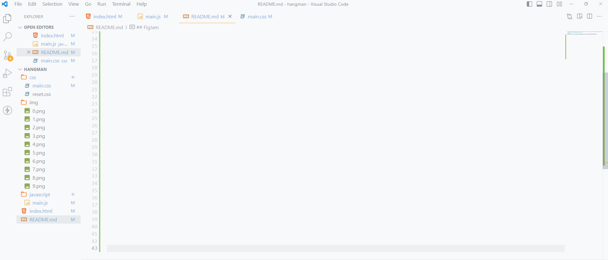
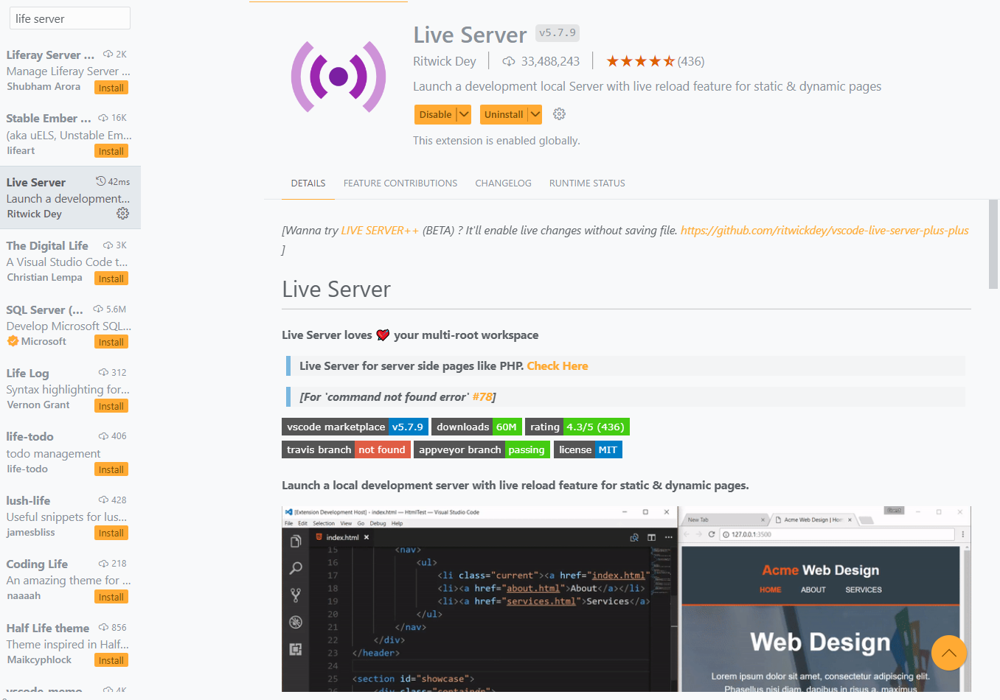

Dit is een kleine tutorial om te leren programeren. Bij deze tutorial gaan we proberen het speletje hangman na te maken.

Mappen structuur
1. Download eerst de bron map aan op je pc.
Download map2. Open nu je visualstudio
3. Ga naar file links boven aan en zoek naar open folder en open de aangemaakte folder
4. Maak nu de zelfde folder structuur aan als in de afbeelding
5. Installeer de live server extensie in Visual Studio Code
6. Start nu de lifeserver op. Er zou nu een leege browser moeten openen
Start met coderen!
HTML
Copieer onderstaande code en plaats deze in de root van je werkfolder met als naam index.html. Dit is de code om de visuele aspecten op de site weer te geven.
CSS
Copieer opnieuw de onderstaande code maar plaats deze nu in het mapje css met als naam main.css. Deze code zal de website stylen (opmaak van de site).
Kijk nu of je het zelfde hebt op de geopende browser als onderstaande foto.
JavaScript
Copieer onderstaande code in de javascript follder en geef het de naam main.js. Dit zorgt voor de functionalitijd van de webapplication.